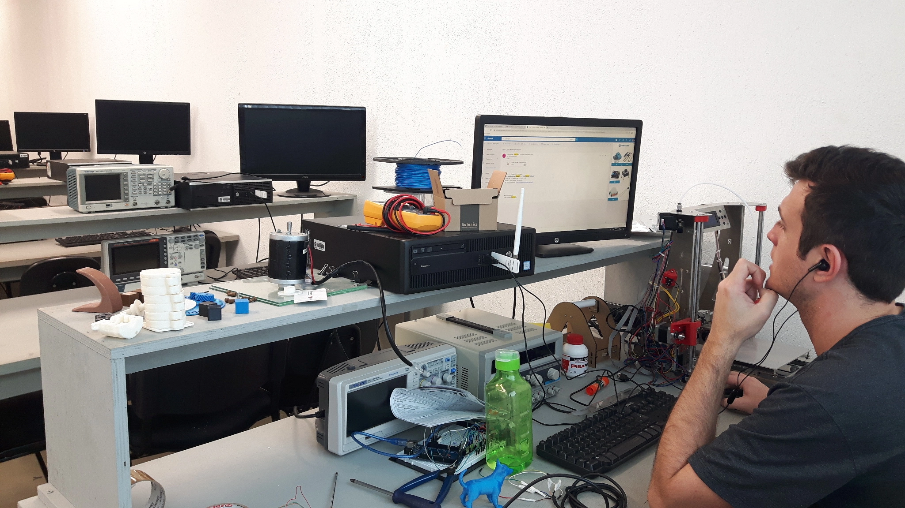
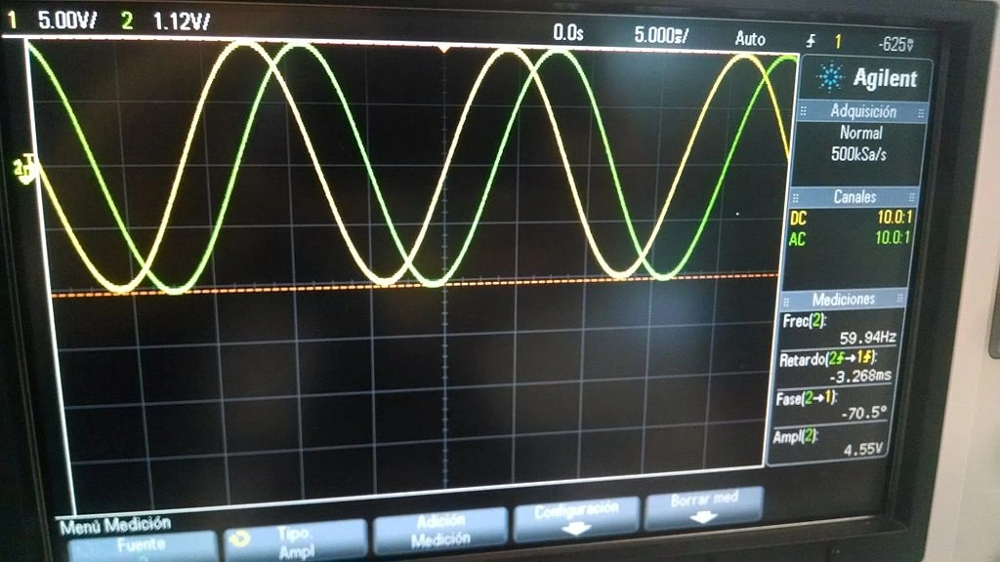

Compreendendo a Hierarquia de Armazenamento
A estrutura de armazenamento otimiza o tempo de acesso aos dados. Ela também reduz o custo dos componentes em sistemas digitais. Essa arquitetura baseia-se no princípio da localidade espacial e temporal. O objetivo central é fornecer ao processador central uma velocidade elevada. Ao mesmo tempo, busca manter uma capacidade ampla utilizando as opções mais econômicas do mercado.
Durante a execução de processos, os sistemas operacionais e o hardware trabalham juntos. Eles gerenciam a transferência de informações entre os diferentes níveis. Essa estruturação divide-se em componentes voláteis e não-voláteis. O desempenho geral do computador depende fortemente dessa organização física e lógica.

O Papel dos Registradores e da Cache
No topo da estrutura ficam os registradores. Eles operam na mesma frequência do processador. Estes circuitos retêm os operandos imediatamente necessários para a execução das instruções na Unidade Lógica e Aritmética. O acesso a essas variáveis ocorre em frações de nanosegundos.
Logo abaixo, a Cache atua como um buffer temporário de altíssima velocidade. Sua função é reduzir a latência de acesso à placa principal. O trânsito de dados entre essas camadas evita ciclos de ociosidade na CPU. Camadas como L1, L2 e L3 possuem tamanhos distintos e tempos de resposta específicos para cada núcleo de processamento.
Abaixo da Cache, encontramos a RAM. Ela retém os programas em plena execução. Na base da pirâmide estrutural, situam-se os discos rígidos magnéticos e as unidades de estado sólido. Eles oferecem grande capacidade de retenção permanente a um custo menor por byte. No entanto, possuem maior latência de leitura e escrita.

Voltar ao topo
Galeria de Componentes de Hardware


Voltar ao topo
Envie suas Dúvidas

Voltar ao topo
Mural do Laboratório




Voltar ao topo